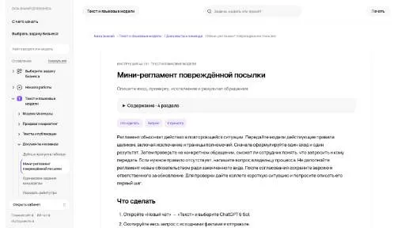

МолекулаАгрегаторы нейросетей
Молекула объединяет модели для текстов, изображений, видео и музыки. В одном аккаунте можно подобрать инструмент под этап работы, сохранить инструкции проекта и использовать готовые роли.
К задаче в МолекулеРаздел «Клиентский сервис»: варианты ИИ для этой задачи, описания возможностей и переходы к обзорам. Сравните несколько решений на одинаковом примере.
Возьмите утверждённую процедуру и подготовьте рабочую памятку сотруднику. В Молекуле можно выделить этапы и условия передачи обращения; новые полномочия требуют согласования владельца процесса.
Из этого порядка обработки повреждённой доставки сделай памятку: что уточнить, какие материалы сохранить и кому передать вопрос. Не обещай возврат денег до решения ответственного.

Молекула объединяет модели для текстов, изображений, видео и музыки. В одном аккаунте можно подобрать инструмент под этап работы, сохранить инструкции проекта и использовать готовые роли.
К задаче в МолекулеAbbot помогает командам клиентской поддержки организовывать общение и рабочие действия средствами ИИ. В продукте описаны интеграции с системами обращений и автоматизация задач. Краткое изложение информации и предложения следующих шагов дополняют работу участников с запросами и содержанием командного процесса.
Для «AI2DocReview» сначала определите свою задачу и требуемый результат. Карточка относится к направлению «Здоровье».
«Airesponses» помогает отвечать на отзывы.
«Nara» представлен в разделе «Чат-боты и ассистенты». При выборе проверьте нужную операцию и условия работы с результатом.
«QuestionBox» представлен в разделе «Чат-боты и ассистенты». При выборе проверьте нужную операцию и условия работы с результатом.
Для «Fin by Intercom» сначала определите свою задачу и требуемый результат. Карточка относится к направлению «Чат-боты и ассистенты».
Ioni AI помогает автоматизировать работу с клиентскими обращениями с помощью языкового ИИ. В наборе представлены помощник, чатбот, поиск, конструктор виджетов и анализ диалогов. Продукт связывает разговорный канал обслуживания с подготовкой интерфейсного элемента и рассмотрением сведений о состоявшемся общении.
Сравнивать «OneTone AI» с другими инструментами раздела «Бизнес» удобнее на одинаковом исходном материале.
Typewise помогает готовить ответы в продажах и клиентском обслуживании. Инструмент предлагает предсказание текста, автоматический ответ и аналитическую панель. Рабочий сценарий объединяет формулирование сообщения с рассмотрением сведений о процессе ответа, без обещания определённой экономии времени или повышения удовлетворённости клиентов.
«Aladdin AI» помогает отвечать на вопросы о продукте во время звонка.
Для «CallZen AI» сначала определите свою задачу и требуемый результат. Карточка относится к направлению «Анализ данных».
«Dex» работает с задачами ведения клиентских данных.
Сравнивать «HiFive» с другими инструментами раздела «Бизнес» удобнее на одинаковом исходном материале.
«Hive» представлен в разделе «Бизнес». При выборе проверьте нужную операцию и условия работы с результатом.
«Inbenta» связан с поиском потенциальных клиентов.
«Juphy 3.0» представлен в разделе «Маркетинг». При выборе проверьте нужную операцию и условия работы с результатом.
«sasha.ai» помогает соединить повторяемые рабочие действия.
Twine помогает автоматизировать работу с клиентскими обращениями: звонки, бронирование и обслуживание. В исходных сведениях также указаны напоминания об отзывах, платёжные ссылки и счета. Для подключения разберите один полный сценарий и проверьте, какое действие действительно выполняется, а какое требует подтверждения сотрудника или отдельного сервиса.
«Wikibot» связан с обработкой обращений клиентов.
«Autocalls AI» помогает обрабатывать телефонные обращения.
Сравнивать «ChatLegal» с другими инструментами раздела «ИИ-ассистент» удобнее на одинаковом исходном материале.
Сравнивать «Drift» с другими инструментами раздела «Чат-боты и ассистенты» удобнее на одинаковом исходном материале.
«Numa» помогает планировать рабочее расписание.
«Riyo» представлен в разделе «E-commerce». При выборе проверьте нужную операцию и условия работы с результатом.
Сравнивать «temo» с другими инструментами раздела «Бизнес» удобнее на одинаковом исходном материале.
«AutoFAQ» связан с обработкой обращений клиентов.
Сравнивать «Call Annie» с другими инструментами раздела «Личный помощник» удобнее на одинаковом исходном материале.
DigitalGenius обрабатывает обращения покупателей в электронной коммерции с помощью ИИ. Сервис предназначен для поддержки при вопросах и проблемах клиента, а ответы подстраивает под конкретное обращение. Работа сосредоточена на содержании запроса и персонализированном общении службы обслуживания с покупателем.
«MARA» помогает отвечать на отзывы.
Whelp собирает обращения из нескольких каналов в одном рабочем окружении. В описании перечислены телефон, почта, чат и приложения для сообщений. Программа предназначена для общей работы с разговорами клиентов, позволяя рассматривать поступившие обращения вместе вместо раздельного просмотра каждого коммуникационного канала.
«Winchat» связан с обработкой обращений клиентов.
«Wizbot» связан с обработкой обращений клиентов.
«zetabot» связан с обработкой обращений клиентов.
«Aisera» связан с обработкой обращений клиентов.
«Callfluent ai» представлен в разделе «Создание чат-ботов». При выборе проверьте нужную операцию и условия работы с результатом.
«Diarupt» связан с обработкой обращений клиентов.
«Eclipse AI» разбирает данные для рабочего анализа.
«Kastro» связан с обработкой обращений клиентов.
Shadow автоматизирует часть работы после встречи, используя содержимое разговоров. Среди задач предусмотрены краткие итоги и обновление CRM по звонкам продаж. Продукт связывает обсуждение с дальнейшими действиями команды, когда полученная разговорная информация должна перейти в запись результатов и актуализацию сведений о рабочем контакте.
«TalkFlow» преобразует речевую запись в письменный материал.
Для «Voxil» сначала определите свою задачу и требуемый результат. Карточка относится к направлению «No-code и Low-code платформы».
Yuma автоматизирует клиентскую поддержку магазинов Shopify с использованием ChatGPT. Продукт подключается непосредственно к программам службы поддержки и ориентирован на обработку большого числа обращений. Эти возможности связывают запросы покупателей и выбранный магазином процесс ответов в рамках используемой среды обслуживания клиентов.
«bewise.ai» работает с задачами ведения клиентских данных.
BotDistrikt помогает создавать бизнес-чат-ботов с ИИ-обучением и настраиваемыми диалогами. Программный интерфейс связывает их с другими системами. Продукт ориентирован на клиентское взаимодействие, где сценарий общения и рабочая интеграция рассматриваются вместе, а ответы помощника могут входить в выбранный компанией процесс поддержки вместо отдельного несвязанного чата.
«Dasha» представлен в разделе «ИИ-ассистент». При выборе проверьте нужную операцию и условия работы с результатом.
«Ivy AI» представлен в разделе «Чат-боты и ассистенты». При выборе проверьте нужную операцию и условия работы с результатом.
«Onfido» работает с задачами проверки личности.
Страница 1 из 2